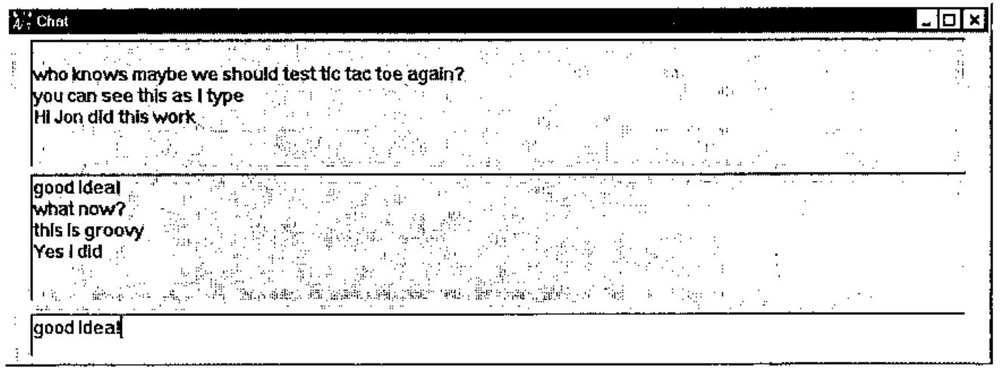

TCP/IP with Timo Laurmaa
Vector 13:2, page 60
Transcribed from the printed issue; not yet reviewed. Read it in the PDF of the issue, page 60
Items in bold in this workshop were typed by Timo at his screen - non-bold by the participants.
Introduction to Basic TCP/IP Programming Concepts¶
Timo explained that he was going to be showing us how to apply the TCP/IP protocol to our own environment - he was NOT going to be showing us how to implement a low level TCP/IP protocol - just how to use the existing application level interfaces available. The majority of the workshop concentrated on using AP119 from Lingo Allegro under Dyalog APL.
Timo supplied a large number of workspaces which looked at different ways of using AP119. We began with the following ...
The IP address is the method that TCP/IP uses of identifying my machine. We noted this information down and also noted down Timo’s IP address as we were going to be communicating with him soon ...
Timo then set himself up as a server. TCP is a cover function that passes calls to the AP119 auxiliary processor.
This creates a socket - in this case referred to as 0. Sockets are a bit like shared variables. STREAM is a type of socket - this particular type is what Timo recommends as it seems to ensure no loss of data.
This creates an association with the socket (0) and a port (2741). The port number is any number. But to avoid clashes with other well known applications (ftp, http, telnet) you need to use a number greater than 1024. The final parameter ‘0.0.0.0’ indicates that Timo wanted to be a server.
This effectively sets up 5 buffers on socket 0 for incoming requests from clients. We can process these when we want. Once the 5 buffers are full new clients will get error messages until we clear some of the buffers.
Which causes the system to hang and wait for incoming requests from clients ...
This was the first person making a connection...how to connect to Timo was documented in the handout - but for the record this is what I did ...
SID←TCP 'SOCKET' 'STREAM'
0
TCP 'CONNECT' SID 2000 '148.88.152.100'
TCP 'SEND' SID 0 'A' 'Hello Server'
13
After a while some people in the room started to get errors - this was because Timo’s 5 buffers were full because he was not reading in data as fast as we were sending it. He showed us how to test if a client was sending requests ...
The 1 in the return indicates that there is something pending. Thus we should go back up and issue an ACCEPT as above. This code needs to effectively execute in a loop until you don’t want to be a server any more! Timo repeated this loop until he had ACCEPTed all the requests from the workshop (17 PCs). These were effectively associated with sockets 1...17 on the server. The server can then query what state these sockets are in...
This vector shows the state of all 17 sockets. The 1s indicate that those ports have sent data that can be read. The server can thus read this data
Once the server has tired of reading from a certain socket it can close it...
The client can check to see if the server has closed its socket with
which will return an empty vector. The client will then clean up the socket at its end as well...
This ended the introduction to the talk. We had learnt both how to set up a TCP/IP server task and how to communicate with it as a client. We then learnt how the server can read its client requests and how both ends can be disconnected when the communication is complete. Next up was how to apply it ...
Four Real Applications of TCP/IP Communication in APL¶
1. DyalogAPL to DyalogAPL communication¶
This workspace uses DyalogAPL’s event-driven facilities to set up an APL server available for clients to run lines of APL code. This code is very similar to the shared variable method of communicating with TCP/IP in APL2 (Jim Brown, APL95).
Timo initialised the server
We connected to it as clients ...
and then requested information about Timo’s DyalogAPL workspace ...
Indeed quite quickly a form appeared on Timo’s screen - someone had realised that you could run any valid APL expression - including those that manipulate the Gui on the server! For example ...
It did not take too long for someone to run
which meant that the server stopped working and this particular part of the workshop came to an abrupt end!
2. A dating server¶
The basis of the event-driven programming technique that Timo uses is to make a hidden form which handles all the TCP/IP events and calls appropriate functions within APL. This workspace contains all the basic low level functions that you need to implement any TCP/IP client server application. This workspace was documented in Timo’s handout. If you are a server you would run ...
and the client runs
The application specific code can now be placed into the generic framework created by this workspace. The dating program (and the following 2 programs) are thus copied into this workspace. This showed us that the code is very generic and just needs to be tailored for each application.
Timo used this workspace to set up a dating service. When the clients were connected they were paired off with another connected client. Our new-found friends would be our opponents in the tic-tac-toe game that followed.
3. Chat¶
Timo then set himself up as a chat server
We could then all send messages via the server

4. 2 player 3D Tic-tac-toe¶
With this we were able to play 3D tic-tac-toe with our new-found friends. You either create yourself as a server or as a client. It depends who wants to start the game. If you weren’t sure who you were playing with then
helped a bit.
Using TCP/IP in Applications on the WWW¶
As a client - i.e. retrieving info from the WWW ...¶
returns the ip address
As a server - i.e. creating info on the WWW ...¶
Then in the client’s browser
etc.